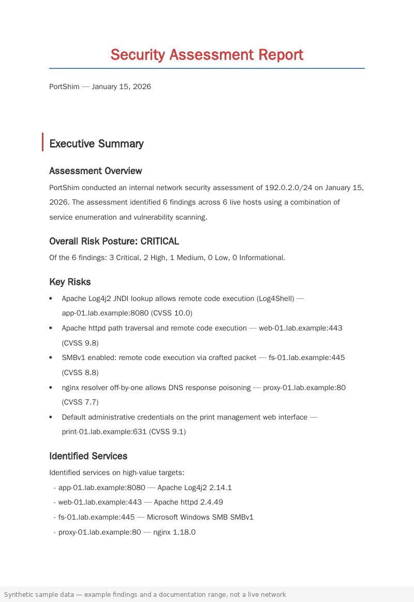
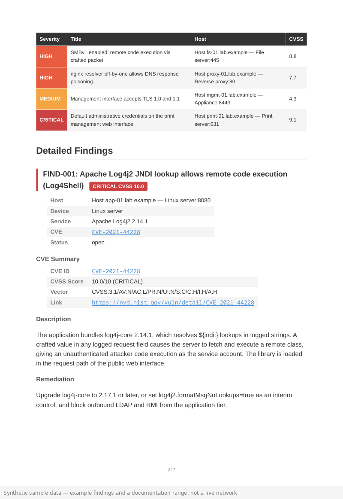
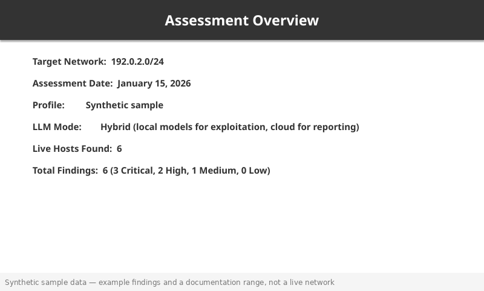

Overview
PortShim generates every deliverable you need from a single command. Findings are rendered with consistent severity colouring, branding, and structured formatting across all formats. No manual copy-paste between tools.
DOCX — Full Report
Branded A4 document suitable for client delivery:
- Cover page with engagement title, date, and classification
- Auto-generated table of contents
- Executive summary with key metrics (hosts scanned, vulnerabilities found, criticals resolved)
- Per-finding sections with CVSS score, vector, description, evidence, and remediation steps
- Calibri font, consistent heading styles, severity-coloured finding badges
Command: python scripts/report-gen.py --format docx
PPTX — Executive Brief
Six-slide deck for stakeholder presentations:
- Title slide — Engagement name, date, classification
- Executive summary — Key metrics and overall risk posture
- Finding overview — Severity breakdown chart (critical/high/medium/low)
- Top findings — Three most critical vulnerabilities with impact
- Remediation roadmap — Prioritised fix timeline
- Next steps — Retest schedule and recommendations
Command: python scripts/report-gen.py --format pptx
PDF — Print-Ready
WeasyPrint-rendered A4 PDF with:
- Inline severity badges (critical=#ef4444, high=#f59e0b, medium=#06b6d4, low=#10b981)
- Cover page and table of contents
- Page numbers and running headers
- Hyperlinked cross-references
Command: python scripts/report-gen.py --format pdf
XLSX — Remediation Checklist
Spreadsheet for tracking remediation progress:
- Auto-coloured severity column (red/amber/blue/green)
- Dropdown filters per column
- Status column: Open / In Progress / Verified / Accepted Risk
- Retest results column for Phase 5
- Printable with frozen header row and print area set
Command: python scripts/excel-checklist.py
Consistent Colour Scheme
All formats use the same severity palette:
- Critical — #ef4444 (red)
- High — #f59e0b (amber)
- Medium — #06b6d4 (cyan)
- Low — #10b981 (green)
- Info — #64748b (slate)
Sample Reports
Preview of each report format generated from a de-identified assessment of a 10.0.0.0/24 network with 14 findings. Full samples are available in the outputs/reports/ directory after running any engagement.

Full Technical Report
Branded A4 document with cover page, executive summary, risk posture, findings table, and per-finding detail sections with CVSS scores and remediation.

Print-Ready Report
WeasyPrint-rendered A4 PDF with cover, table of contents, severity-coloured findings, CVSS vectors, CVE links, and hyperlinked cross-references.

Executive Brief
Six-slide widescreen deck with title, assessment overview, risk posture bars, key risks with severity tags, remediation roadmap, and next steps.